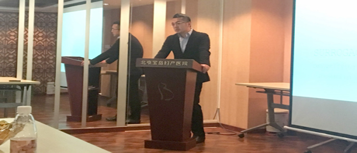
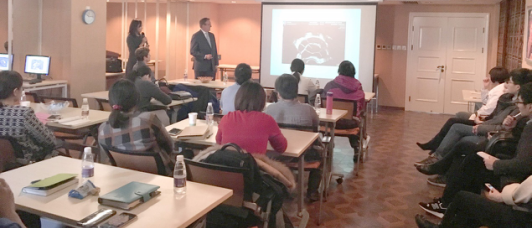
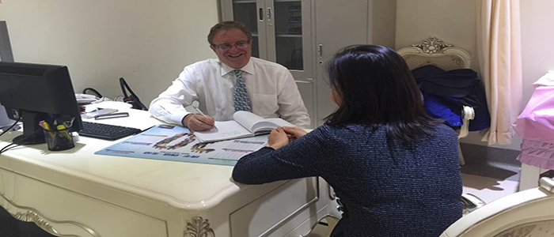
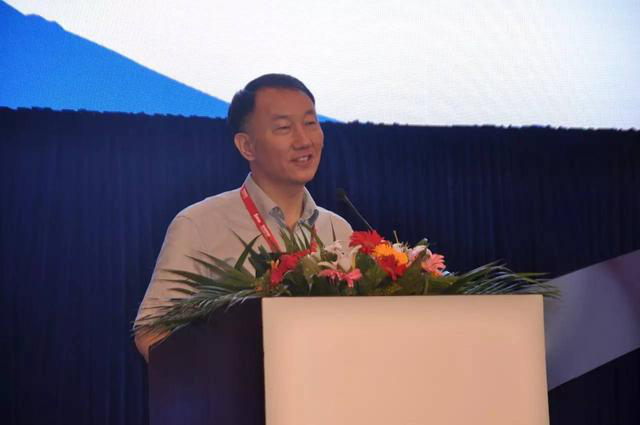
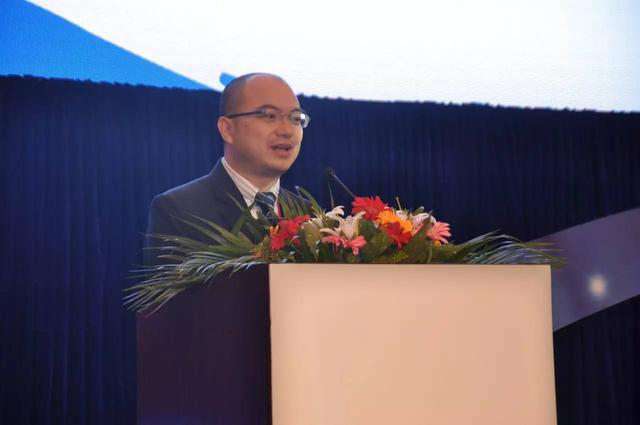
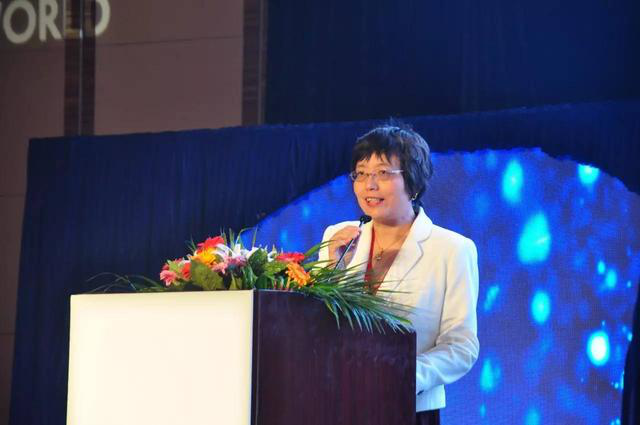
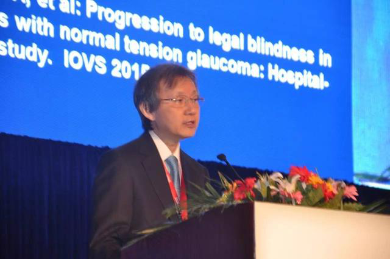

2016-12-05
2016年美国辅助生殖说明会，于11月28日上午9:30，在北京宝岛妇产医院尊荣厅召开。本次会议由壹加医国际健康管理有限公司主办，北京宝岛妇产医院协办。会议旨在促进中美辅助生殖技术的交流发展、促进人们对辅助生殖技术的深入了解。
会议开始，壹加医国际健康管理有限公司商务总监朱先生发表讲话。朱先生代表主办方对到场的中美专家表示感谢，并希望本次会议能真正加强促进国际辅助生殖学术交流。
美国辅助生殖专家人类胚胎学博士，HRC生殖医疗集团首席专家，纽约时报和ABC晚间报道封面人物，加州大学洛杉矶分校妇产科临床教授MichaelA.Feinman在会上分享《海外辅助生殖》专题，阐述辅助生殖医学科研与临床医学技术应用中涉及的临床质量控制、安全管理、实验室技术运用，现场座无虚席。
美国生殖学学会会员、拥有超过16年的第三方辅助生殖领域专业经验、著有畅销书《Surrogacy Helps Make a Family Grow》的Sharon LaMothe女士阐述美国代孕的安全性、伦理学、以及对涉及领域的前沿及热点问题。
会后，MichaelA.Feinman博士，对前来的患者进行公益会诊，帮助不孕患者找到最适合自己的生育解决方案。
会议的圆满召开为中美两国在开展人类辅助生殖医学领域国际化交流与合作中树立新典范，创造新机遇！
据了解，本次会议的主办方壹加医提供的服务包括：国际就医服务、国际体检服务、国际专家会诊、海外辅助生殖、医学专职翻译、海外医疗签证等众多专业化海外医疗服务。医疗有风险，壹加医对全球医院的苛刻选择，确保壹加医客户享受到更优质、更安全、更舒适的国际顶级医疗健康服务!
2016-10-19
神外前沿讯，据日经技术在线报道，日本大型企业日机装计划投放微波设备“Acrosurge”，是一种在外科手术中用来切除组织和进行止血的器具。该产品实现了可避免对周边组织产生影响、不会过度烧灼的病变切断性能，以及较高的止血性能。该产品将从2016年8月开始在6家医疗机构进行临床试用，并将来打算使其能够用于脑外科手术。
Acrosurge利用的是微波加热作用。这也是微波炉使用的加热原理，其现象是，向介电体照射微波会使其分子发生振动，从而使介电体发热。
外科手术中，必须使用多种器具进行皮下组织切断、血管闭合等操作，更换器具比较麻烦，对于执刀医生和患者来说都有一定负担，比如手术时间延长等。但Acrosurge可以在微波的作用下同时进行皮下组织的切断、脏器与组织的切断及止血、血管的切断和闭合。由于减少了更换器具的麻烦，因此可以缩短手术时间。
信息来源：日经技术在线
2016-10-19
青光眼是全球最常见的致盲性疾病之一，其对患者的视觉和生活质量造成严重影响。青光眼治疗的根本为降低眼压，药物治疗是最常用的降眼压手段，前列腺素（PG）类药物具有最强的降眼压幅度，被众多指南/共识一致推荐为治疗开角型青光眼的一线用药。2016年8月28日，拥有最新结构的PG家族新成员泰普罗斯®（他氟前列素滴眼液）正式登陆中国，在泰普罗斯®上市会暨第一届中日韩青光眼高峰论坛与广大中国眼科医师见面，中华医学会眼科学分会副主任委员孙兴怀教授、北京大学第三医院吴玲玲教授、日本尾崎医院Mineo Ozaki教授和韩国蔚山大学Michael S. Kook教授共同出席启动仪式，并联袂带来“中国正常眼压型青光眼治疗现状”、“ PG类药物治疗青光眼的反应率”和“24小时眼压的管理”精彩讲题，和与会眼科专家全面探讨他氟前列素滴眼液的优势及青光眼诊疗领域的最新进展。
上市寄语:
孙兴怀教授：很高兴看到他氟前列素滴眼液正式登陆中国，为中国眼科医师带来了新的抗青光眼治疗手段，我希望今后通过临床的广泛应用，中国医师能够积极观察、积累经验，深入挖掘他氟前列素的优势，从而造福中国广大青光眼患者，同时也感谢参天公司对于中国眼科事业发展做出的重大贡献。
参天制药（中国）有限公司刘晔总经理：医学事业的发展就像不断延伸的浩瀚沙海，是靠一粒粒泥沙堆积而成的，每一粒泥沙都是医学的一次次进步。他氟前列素滴眼液也是这众多泥沙中的一粒，我们希望这粒泥沙能够为中国乃至全球的青光眼患者带来福音，最终成长为一颗阻击青光眼疾病的坚硬石头！
中国NTG治疗现状:
吴玲玲教授对众多国内发表的正常眼压性青光眼（NTG）文献进行了汇总分析。NTG是原发性开角型青光眼（POAG）的特殊类型，只是其眼压从未超过正常值范围上限（21 mm Hg），而且需要排除其他疾病引起的眼底及视野的变化。既往一直认为我国NTG发病率不高，但是后来的一系列证据显示，我国40~50岁以上人群中POAG的发生率为0.7%~2.85%，其中NTG占51.4%~90%，提示NTG是我国最主要的POAG类型。
我国NTG眼压高峰在夜间，眼压波动平均在5 mm Hg。NTG患者有较大的C/D 值、C/D面积比和窄视盘盘沿面积，视网膜神经纤维层（RNFL）以局限性缺损为主。研究显示，NTG患者视盘出血发生率为34.9%，好发象限为颞下>颞上>其他象限。即使是很早期的NTG，也可能影响视力。与慢性闭角型青光眼（CACG）相比，NTG在疾病早中期视盘形态明显不同，其PPAβ带发生率高，中心视野更易受累，提示眼压依赖型与非眼压全依赖型青光眼可能具有不同的视神经病变发生机制，就此王宁利教授领衔的北京iCOP研究组提出跨筛板压力差致青光眼视神经损害的理论。
在NTG治疗方面，他氟前列素和拉坦前列素均能显著降低POAG患者眼压，且降幅相当。但他氟前列素的眼血流改善作用显著优于拉坦前列素，其通过释放内源性PG-I2，直接扩张血管，改善眼血流（非眼压依赖）。
PG类药物治疗青光眼的反应率:
Mineo Ozaki教授提到，NTG在亚洲的青光眼诊治中是重要问题（图1），NTG尽管进展缓慢，但20年导致单眼盲的可能性并不低。局部药物治疗能控制NTG患者视野缺损进展，PG类药物最有效，对于可能存在对PG类药物无反应者，在PG类药物间转换治疗或可有效。
日本进行了一项为期28周的随机交叉研究比较了0.0015％他氟前列素和0.004％曲伏前列素在NTG患者中的疗效（图3）。结果显示，二者降眼压幅度相当（图4），但是他氟前列素在对曲伏前列素无效的患者中显示出有效性。在基线眼压10~15 mm Hg亚组中，他氟前列素组降眼压幅度高于10%的患者比例显著高于曲伏前列素组（图5）。治疗12周后的眼压降低率有个体差异，降压幅度高于10%的患者在他氟前列素组为高（图6）。他氟前列素降低眼压不依赖于初始眼压。
2016-10-19
X光检查是传统的影像学检查手段，它是应用较早、最普遍，价格也相对便宜。主要用于一些疾病的初步检查，便于发现较明显病变的组织和结构，是疾病初筛的首选检查方式。
X光检查，对于有移位骨折、有骨质改变的骨病、关节部位骨性病变、不透光异物存留、心肺器质性疾病、消化系统梗阻等疾病有很好的诊断价值。
另外，X光片还能拍摄动力位相，能发现患者在改变体位时才感觉到不适的疾病。
如今X光确实已不再先进，但仍在各大三甲医院拥有一席之地，在很多乡镇卫生院还是镇院之宝。原因很简单——设备便宜、费用低廉、操作方便、立等可取。这种特性让X光很适合作为体检的筛查项目，作为第一道检查工具。
X光的另一大好处是应用广泛：呼吸科，明确是否有肺部病变，还能看到心脏是否变大了；骨科，用来判断是否有骨折；消化科，查看是否有肠梗阻、胃肠穿孔、胆囊结石或者肾结石。
然而我们还是要正视它的致命不足——分辨率太低，对那些前后重叠的组织难以区分。于是人类在20世纪70年代发明了可以逐层扫描、显示任意断面的大杀器——CT。
2016-10-13
张先生痛风多年，在2016年3月去日本体检，经过专家会诊，给张先生开了通风药，经过三个月的药物治疗，张先生痛风有明显好转，然后客人通过我们的会员VIP通道又预定了一个疗程的药，我们日本专业人士直接在医院购买后邮寄给客人。现在张先生的痛风已经基本治愈。
2016-10-18
作为从1994年开始的放射线医学综合研究所“HIMAC”的治疗成果，5年生存率如下所示。考虑到是在初级阶段的临床实验（第Ⅰ/Ⅱ期），而且是以无法手术的肿瘤、进展期肿瘤和复发的肿瘤作为主要治疗对象，已经是极为良好的成绩了。
・前列腺癌 约95％
・无法手术的Ⅰ期肺癌 约70％
・头颈部恶性黑色素瘤 约50％
・躯干部进展期骨肉瘤 约50％
・复发性进展期肝癌 约50％
・Ⅲ─Ⅳ期进展期子宫颈癌 约45％
重粒子线治疗有效的组织类型
对如下组织类型的癌症的有效性已得到证实。
・腺癌类（腺癌、腺样囊性癌、肝细胞癌）
・肉瘤类肿瘤（恶性黑色素瘤、骨与软组织肉瘤）
治疗时间：开展短期小分割照射验证
重粒子线治疗的照射剂量集中性高，较少次数的照射也容易获得治疗效果，医学界正在研究各种癌症的短期小分割照射。目前，前列腺癌、子宫癌（20次／5周照射）、头颈部肿瘤、骨与软组织肿瘤（16次／4周照射）均比传统放疗缩短约二分之一。
有害反应：尚未发现严重的有害反应
日本于1994年开始了重粒子线治疗，在最初的第一第二期临床实验中，以高剂量治疗的前列腺癌、子宫颈癌、食道癌病例中曾出现过消化道严重副作用的病例。后来通过临床研究，安全剂量和照射方法不断得以改进，现在已完全没有那种副作用了。
2016-10-13
王女士去日本体检之余顺便做了个美容，淡化黑眼圈和打VC。王女士在了解了体检后，随后又向我们咨询了日本医美，根据自身情况王女士选择了淡化黑眼圈和打VC的项目。提前一个月我们为王女士预约好了两家医院，然后协助王女士办理日本签证，王女士属于我们的VIP客户，我们特此为她办理了日本五年签证，话说以后去日本就可以收走就走了，预定酒店、安排用车、安排陪同翻译，准备工作一气呵成。王女士顺利抵达日本医院，先做了一天体检，第三天上午打vc，下午做黑眼圈。我们的专业陪同医护人员全程陪同，为她解答翻译和医生沟通。治疗后王女士很满意，黑眼圈消失了，整个人都光彩照人。体检加美容，健康又美丽。